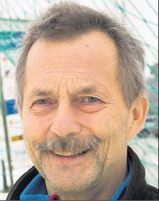

Kurth Olav Fallmyr
M, #48944, f. 16 juli 1955, d. 6 september 2018
Foreldre
Familie: Anita Elise Tømmermo
| Sønn | Thomas Aleksander Tømmermo Fallmyr+ |

Kurth Fallmyr
Biografi
Kurth Olav Fallmyr ble født den 16 juli 1955 på/i Nærøy, Nord-Trøndelag. Han giftet seg med Anita Elise Tømmermo. Han døde den 6 september 2018. Han ble gravlagt den 13 september 2018 på/i Kolvereid kirkegård, Nærøy, Nord-Trøndelag.
Kurth Olav Fallmyr bodde på/i Kolvereid, Nærøy, Nord-Trøndelag.
| Sist redigert |
13 september 2018 00:00:00 |
| Slektskap | 7-menning til Håkon Wahl |
Kristian Fallmyr
M, #48946, f. 17 juni 1929, d. 25 mars 2018
Foreldre
Familie: Hildur Holandsli
| Sønn | Kurth Olav Fallmyr+ (f. 16 juli 1955, d. 6 september 2018) |
| Datter | Heidi Annie Fallmyr |
| Sønn | Egil Fallmyr |
Biografi
Kristian Fallmyr ble født utenfor ekteskap den 17 juni 1929 på/i Rissa, Sør-Trøndelag. Han giftet seg med Hildur Holandsli. Han døde den 25 mars 2018. Han ble gravlagt den 4 april 2018 på/i Torstad kirkegård, Nærøy, Nord-Trøndelag.
Kristian Fallmyr ble døpt den 18 august 1929 på/i Rissa, Sør-Trøndelag. Han bodde i 2009 på/i Ottersøy, Nærøy, Nord-Trøndelag.
| Sist redigert |
6 april 2025 08:53:10 |
Nora Hiller
K, #48948, f. 21 mars 1915, d. 9 november 2003
Foreldre
Biografi
Nora Hiller ble født den 21 mars 1915 på/i Hiller; Gravvik, Nærøy, Nord-Trøndelag. Hun giftet seg med
Jakob Korgen. Hun døde den 9 november 2003. Hun ble gravlagt den 25 august 2004 på/i Kolvereid kirkegård, Nærøy, Nord-Trøndelag.
Nora Hiller was also known as Nora Korgen. Hun ble døpt den 4 juli 1915 på/i Gravvik, Nærøy, Nord-Trøndelag. Hun bodde på/i Kolvereid, Nærøy, Nord-Trøndelag.
| Sist redigert |
24 juni 2017 00:00:00 |
| Slektskap | 5-menning 1 gang forskjøvet til Håkon Wahl |
Jakob Korgen
M, #48949, f. 6 juni 1886, d. 10 mai 1949
Biografi
Jakob Korgen ble født den 6 juni 1886 på/i Korgen, Hemnes, Nordland. Han giftet seg med
Lydia Kristine Hiller. Han giftet seg med
Nora Hiller. Han døde den 10 mai 1949 på/i Narvik, Nordland. Han ble gravlagt på/i Narvik nye kirkegård, Narvik, Nordland.
| Sist redigert |
27 september 2015 00:00:00 |
Randi Finne
K, #48950, f. 22 mai 1930, d. 25 september 2001
Foreldre
Familie: Ingvard Wold (f. 31 august 1922, d. 25 august 1999)
| Sønn | Jon Wold |
| Datter | Ingrid Wold |
| Datter | Sigrid Wold |
Biografi
Randi Finne ble født den 22 mai 1930 på/i Kolvereid, Nærøy, Nord-Trøndelag. Hun giftet seg med
Ingvard Wold. Hun døde den 25 september 2001. Hun ble gravlagt den 2 oktober 2001 på/i Meldal kirkegård, Meldal, Sør-Trøndelag.
Randi Finne was also known as Randi Wold.
| Sist redigert |
23 april 2020 00:00:00 |
| Slektskap | 5-menning 1 gang forskjøvet til Håkon Wahl |
{kind=link}